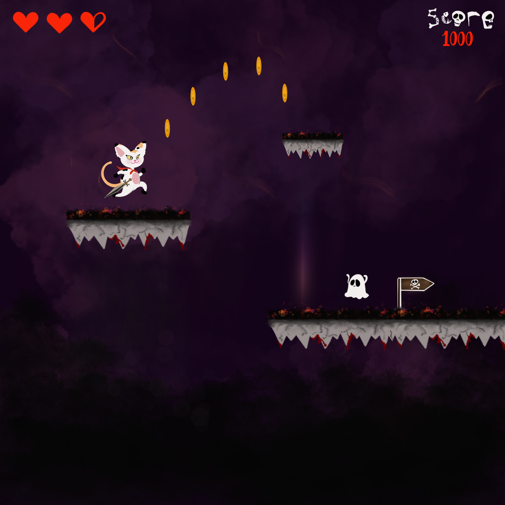

Code Cats 2D is a platformer, side scroller video game designed and developed using Unity engine. The gameplay is viewed from a side view angle featuring a single level design that is rather challenging to complete. It features a main
character that will remain in the middle of the display whether you move forward or backwards, meaning moving the character will move the background.

Level Design
The level is that of a platform game, in which the playable character is only allowed to run and jump on the platforms. Falling off of the platforms will otherwise result in character death which, depandant on player choice, will
restart the game, or trigger game over.
The level has been designed to challenge the players, and it gets more and more challenging as the players get closer to the end of the level keeping the players engaged and motivated as they overcome challenging obstacles across the
level.
Enemies will be placed across the level mostly in tricky positions. These enemies will have the ability to move and hit the playable character. The enemies can be seen or hidden depending on where they have been placed in the level.
For instance, enemies to be placed inside a tunnel where both playable character and enemies are hidden from the camera. The appearance of each enemy may vary.
Coins and special coins will be placed all over the level mostly in hard-to-reach places aiming to challenge players and motivate them to get all the coins and beat the game. Hidden platforms exist across the level containing special
coins for the players who dare to explore Code Cats 2D.
Playable Character
The main playable character will have the ability to run (forward or backwards in case any coins are missed) and to jump over obstacles and enemies, that are placed across the level mostly in tricky situations. Jumping on top of
enemies will kill them and grant the players points, which are then added to the scoreboard. Similarly, touching enemies will result in losing health and eventually death if the health bar is completely depleted.
Running or jumping through coins and special coins will add them to the player total, in turn updating the scoreboard.
Game Design
The game has a time-base reward system in which if you beat the game with less time the reward you get will be better.
Upon completing the game, the player will receive a special message based on their score congratulating them on completing Code Cats 2D.
The game is over when the playable character is dead, alternatively, it can be restarted if the player chooses to try again.
The scoreboard and player best records will be stored locally on an XML file within the game data. Upon deleting the game, all the saved data will also be deleted.
Animation
Certain elements of the game have animations. These animations will give the game more depth and feel. Elements will only animated when visible, to increase performance.
Elements to be animated are as follows:
- Main playable character:
- Jumping Animation
- Walking animation
- Enemies:
- Moving animation
- Coins:
- Rotating animation
- Background:
- Sky and Clouds move as the character starts moving around
Sound
Elements have sound effects to create tension and add emotion while building immersion in the game.
Elements to have sound effects are as follows:
- Main playable character:
- Falling off a platform
- Touching an enemy
- Collecting coins
- Completing the game
- Environment:
- Theme music for the game track
- Enemies:
- Sound effects
- Beating the game:
- Based on time and score, a different special sound effect is triggered